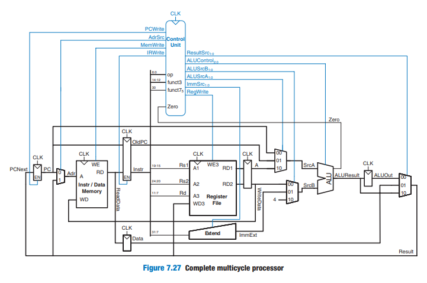
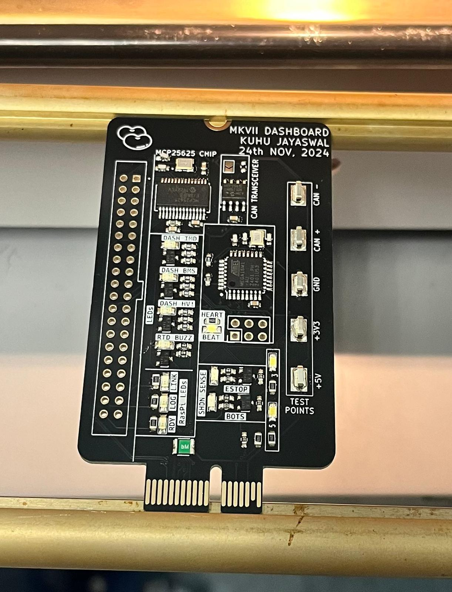
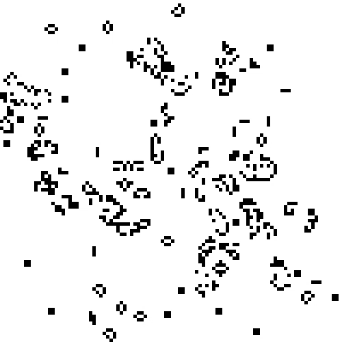
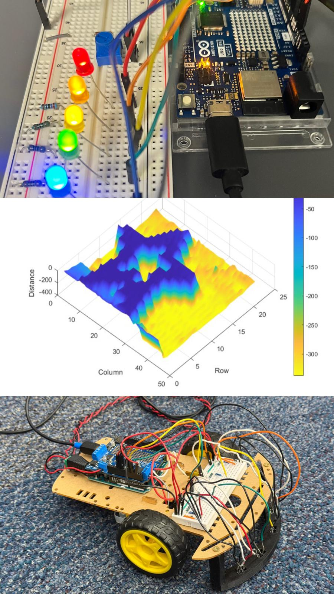
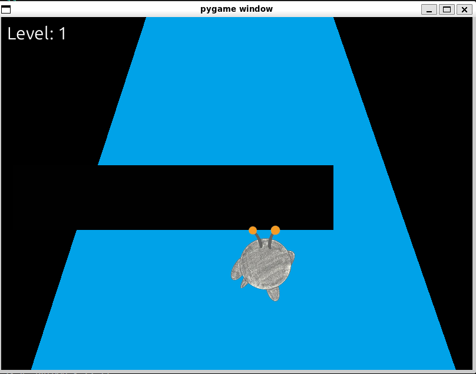
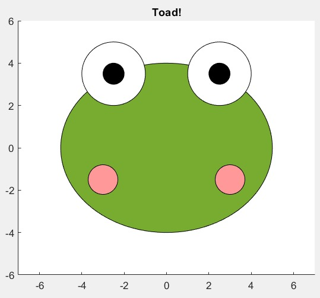

PROJECTS
Enigma M3 Machine
Designed a modernized take on an electro-mechanical Enigma M3 used in WWII to encrypt and decrypt messages.


32-bit RISC-V Processor
Developed a multicycle RV32I microprocessor in SystemVerilog with GTKWave simulations and hardware implementation on an iceBlinkPico FPGA.
Dashboard PCB (Formula SAE)
Redesigned dashboard PCB on the Low Voltage subteam and implemented embedded software stack using C (Atmega) and Python (Raspberry Pi) for CAN-based drivability checks.


Conway's Game of Life
Designed and implemented Conway's Game of Life in SystemVerilog with RGB color-cycling on an 8×8 WS2812B LED matrix.
Integrated Engineering Projects
A collection of three interdisciplinary projects combining electrical systems, mechanical design, and software development.
- Project 1 - Bike Lights
- Project 2 - 3D Pan/Tilt Scanner
- Project 3 - DC Motor Control


Run Game Dupe
Built the recreation of the classic Run game series: a fast-paced platformer where the player navigates through tunnels in space without falling into pits.
Quantitative Engineering Analysis Projects
A bundle of the QEA course series' projects across multiple experiments, labs, and concepts. Highlights include Rainbow Road, Bottle Lab, and Dryer Vibrations with DFT.
